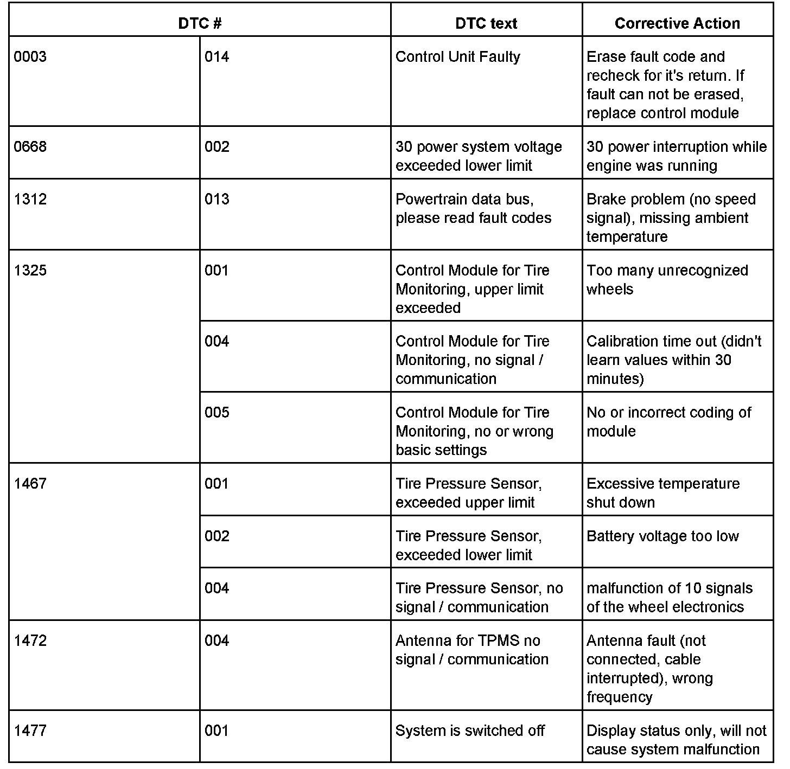
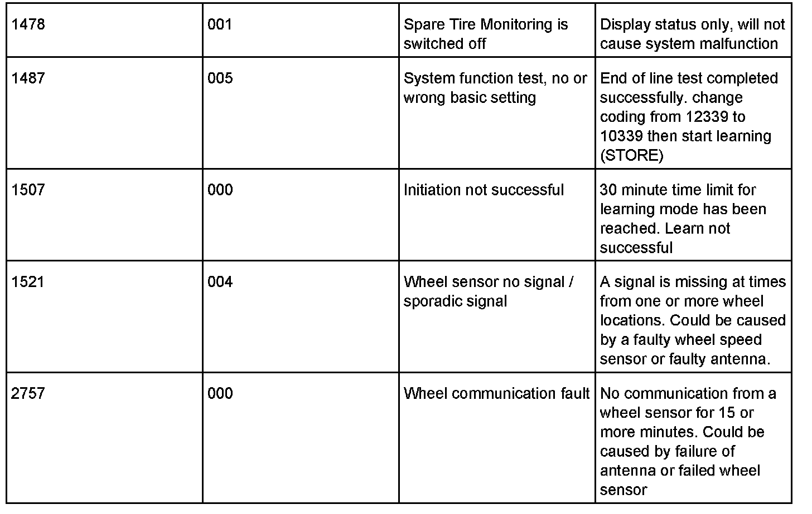
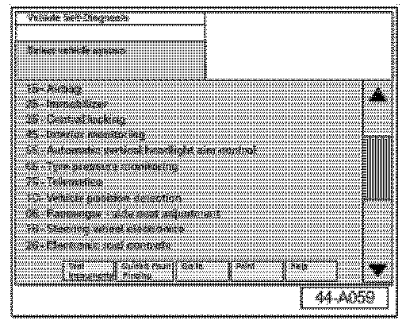
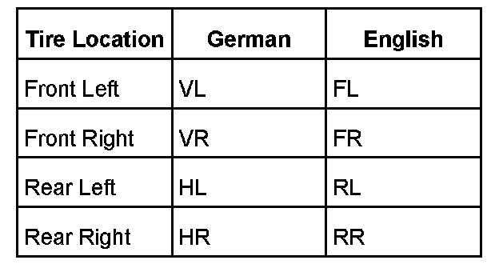
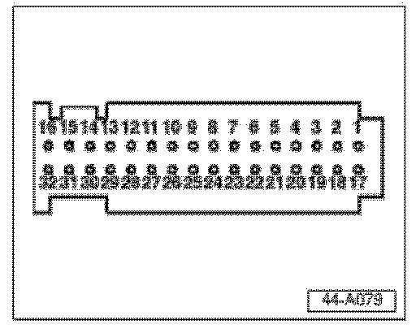
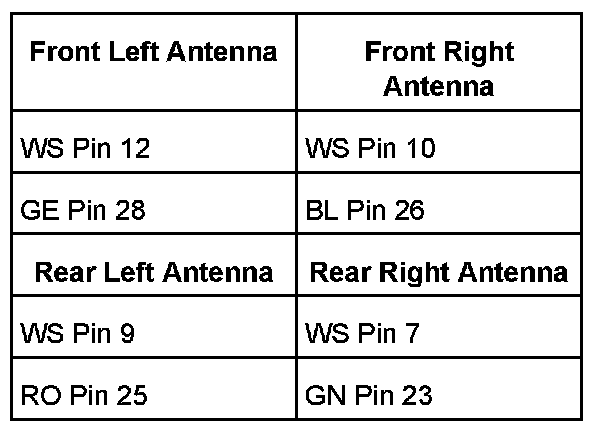
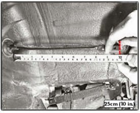
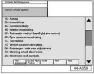

Service
Service^ Observe text in MFI
If message does not contain "System fault" or "System learning":
^ Write down tire pressure from MFI ("Monitored pressures" menu) and switch OFF ignition.
^ Adjust tire to recommended pressure from tire pressure label.
^ Switch ON ignition.
If TPMS warning light goes out and the "Monitored pressures" value matches tire pressure label:
^ No malfunction is present and the work is complete.
The above condition is an intended operation of the vehicle and will not be warrantable.
If a system fault message is present or the "Monitored pressure" value is below the correct tire pressure,
^ Follow diagnostic sequence outlined in "TPMS Service Flowchart".


Test Plans 1, 2 and 3 are located after Fault code table.
^ Record Test Plan 1 - Measuring Value Block readings on "TPMS Survey Form".
^ Record Test Plan 3 - Wheel sensor ID in their respective box on "TPMS Survey Form".
For vehicles within the new vehicle limited warranty, TPMS Survey Form must be filled out by Test Plan completed or Warranty claim may be denied.
^ A completed survey form must be attached to every warranty claim that is filed.
^ Make additional copies of TPMS form as necessary.
Test Plan 1: Pressure Verification

Record TPMS Measuring Value Blocks 1-15 as follows:
^ Connect VAS 5051/5052 Diagnostic tool.
^ Switch ignition ON.
^ From Start-up screen, select "Vehicle Self-Diagnosis".
^ Select vehicle system "65 - Tire pressure monitoring".
^ Select Diagnosis function "Measured Values".
^ Input "1" on keypad to select "Display group" "1".
Tip:

In the following Fields with "On-vehicle wheel locations" might be displayed in German or English. Refer to table above for German / English translation.
Record "Fields 1-4" on appropriate MVB line of TPMS Survey Form.
^ Field 1 = On-vehicle wheel location.
^ Field 2 = Actual tire temperature.
^ Field 3 = Actual tire pressure (at default temperature of 20 C).
^ Field 4 = Stored tire pressure value from last learn drive must match value of vehicle tire pressure label or learn drive must be performed after setting correct tire pressure (if last learn drive was not completed, default value will be displayed).
Compare stored tire pressure "Field 4" and actual tire pressure "Field 3":
^ Actual tire pressure must not vary by more than - 0.4 bar.
If actual tire pressure varies by more than - 0.4 bar:
^ Adjust tire pressure to value on tire pressure label.
^ Cycle ignition.
If TPMS light goes out shortly after ignition cycle:
^ Concern is corrected. No Learn drive required.
Go to "Display group 2".
Record "Fields 1-2" on appropriate MVB line of TPMS Survey Form.
^ Field 1 = On-vehicle wheel location.
^ Field 2 = Months of battery life remaining in wheel sensor.
Go to "Display group 3".
Record "Fields 1-3" on appropriate MVB line of TPMS Survey Form.
Tip:
Display group 3 fields are shown in one line. Divide line into 3 fields.
^ Field 1 = On-vehicle wheel location.
^ Field 2 = Last stored wheel ID.
^ Field 3 = Last known status of sensor.
Repeat "Test Plan 1" for remaining tires. Use the following display groups for appropriate tire:
^ Right front tire = Display groups 4, 5 and 6.
^ Left rear tire = Display groups 7, 8 and 9.
^ Right rear tire = Display groups 10, 11 and 12.
^ Spare tire = Display groups 13, 14 and 15 (with full size spare only).
Record 2 additional Display groups:
^ Display group 19 (System status).
^ Display group 20 (State of CAN status).
Test Plan 2: Antenna Diagnosis
^ From Start-up screen, select "Vehicle Self-Diagnosis".
^ Select Vehicle system "65 - Tire pressure monitoring".
^ Select Diagnosis function "012 - Adaption".
^ Input "17" on keypad to select "Channel 17".
^ Press "Q" button to confirm.
^ Change value to "1" using keyboard button or slider bar.
^ Select "Save" and "Accept" buttons to record change.
Tip:
Antenna diagnosis is now in progress.
^ Return to "Diagnosis function" screen using backward arrow button on navigation bar.
^ Select Diagnosis function "Measured Values".
^ Input "21" on keypad to select "Display group "21".
^ Wait until "Field 1" displays "Check END".
Tip:
Test will take approximately one minute.
^ Return to "Diagnosis function" screen using backward arrow button on navigation bar.
^ Select Diagnosis function "004-DTC memory content (use sub function 004.01)".
If antenna fault (DTC 1472) is present:
^ Proceed to "Advanced antenna diagnosis".
Advanced Antenna Diagnosis
Tip:
Individual resistance of each antenna should be approximately 210
ohms.


^ Measure resistance at the harness side of TPMS control module between pins as shown in table above.
If any resistance measurement does not near 210 ohms:
^ Check and repair wiring.
ONLY ADJUST LEFT REAR ANTENNA.

^ Adjust cable-to-body grommet length = 25 cm (10 in.)
Note:
Length of antenna cable must be 25 cm from groove in grommet to connector end. Pull antenna cable through grommet to adjust length.
If wiring is OK:
^ Replace antenna.
Test Plan 3: Wheel Sensor Identification / Status
Tip:
Measure Value Blocks 3, 6, 9 and 12 (also MVB 15 in 2005 only) are stored when the system is relearned. Therefore this information is not always an accurate representation of current wheel location and status.
In addition, one faulty wheel sensor has the potential to create faults at multiple wheel locations.
How to identify current tire pressure monitoring sensor locations:
Vehicle must be parked AWAY from other vehicles with same or similar tire pressure monitoring system.
Tip:

If vehicles with same or similar systems are parked too close to one another there is a likely possibility of system interfering with each other.
Measure Value Blocks 3, 6, 9 and 12 (also MVB 15 in 2005 only) are stored when the system is relearned. Therefore, this information is not always an accurate representation of current wheel location and status.
Enter Measuring Value Block 16 as follows:
^ From Start-up screen, select "Vehicle Self-Diagnosis".
^ Select vehicle system "65 - Tire pressure monitoring".
^ Select Diagnosis function "Measured Values".
^ Input "16" on keypad to select "Display group "16".
Tip:
The MVB is a current / real time scrolling status of all ID's and sending speeds.
^ Starting with front left wheel, release a minimum of 3.0 psi. (0.2 bar).
Tip:
A pressure release of more than 3.0 psi. will change the sensor in wheel from 01h to 02h (normal sending speed to rapid sending speed).
^ Observe MVB 16 for the ID which speed changed to "02h".
^ Write down respective ID in the correct location on "TPMS Survey Form".
After completing first two wheels, wait 3 minutes until sensors revert back to normal speed (01h).
If any wheel on vehicle transmitted speed reads 00h:
^ Sensor in wheel is faulty.
^ Replace when located.
^ Repeat "Test Plan 3" for each wheel until ALL wheel sensors have been identified.
^ Perform learn drive to set system pressures.
^ Using second technician, verify that all sensor ID's scroll through "MVB 16".
If one ID is not observed while driving:
^ Call Technical Helpline after verifying that rear antennas are properly secured.
^ Repeat learn drive, until "MVB 19" shows "63545".